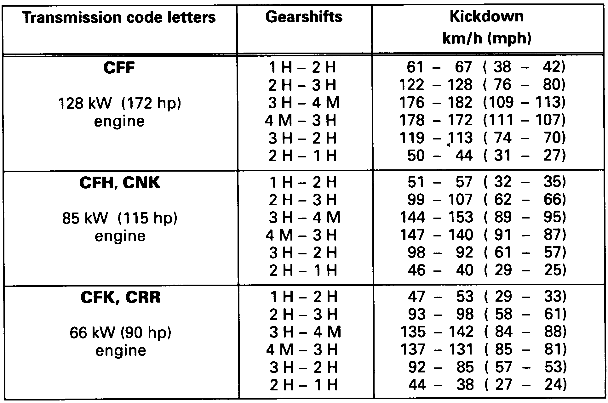
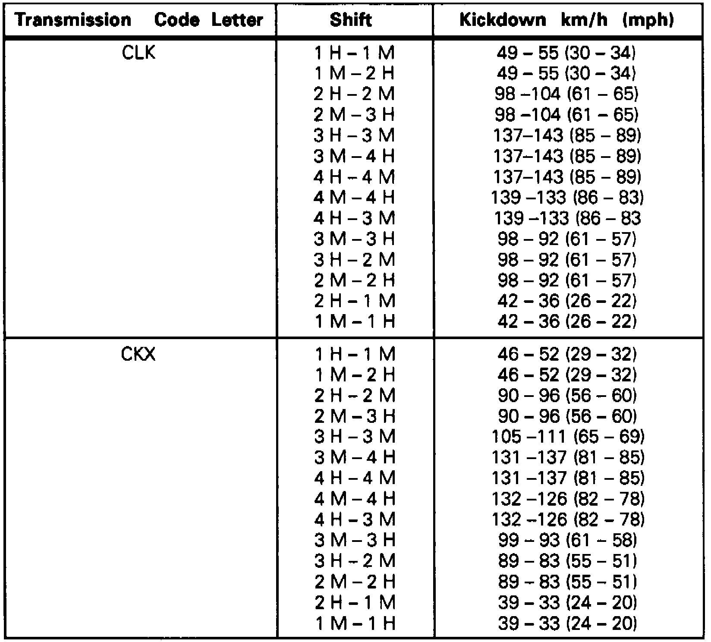

Shift Points 096 & 01M Transaxles
Fig. 4 Shift Point Table (Part 1 Of 2):

Fig. 4 Shift Point Table (Part 2 Of 2):

Fig. 5 Shift Point Table (Part 1 Of 2):

Fig. 5 Shift Point Table (Part 2 Of 2):

Locate transaxle code as described under "Identification," then refer to Figs. 4 & 5 to locate shift point table that applies to vehicle being tested.
After locating the correct table, note that the capitol letter following the shift (M or H) indicates whether the shift is to be performed (M) manually or (H) hydraulically.
Tables for transaxles with shift program selection built into the control module, (control module senses how fast accelerator pedal is pushed down to choose between SPOrt or ECOnomy modes) show only kick down speeds.